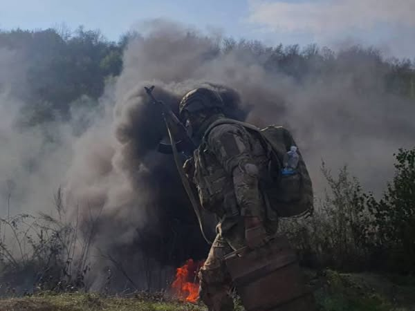
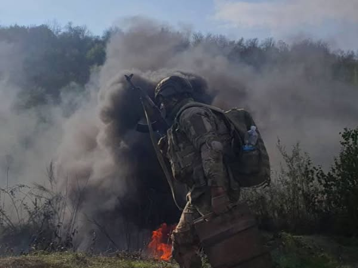

Про нас
156-а окрема механізована бригада — це сила, мужність та відданість в захисті нашої країни. Ми гордимось своєю історією та щодня створюємо майбутнє. Разом до перемоги!
Військовослужбовці нашої бригади спочатку проходять базову загальновійськову підготовку в навчальному центрі протягом 1-го місяця, а в разі необхідності ще проходить навчання із фахової підготовки (строк залежить від ВОС). У бригаді бійці продовжують навчатися на полігонах для злагодженої роботи в підрозділах.
 
